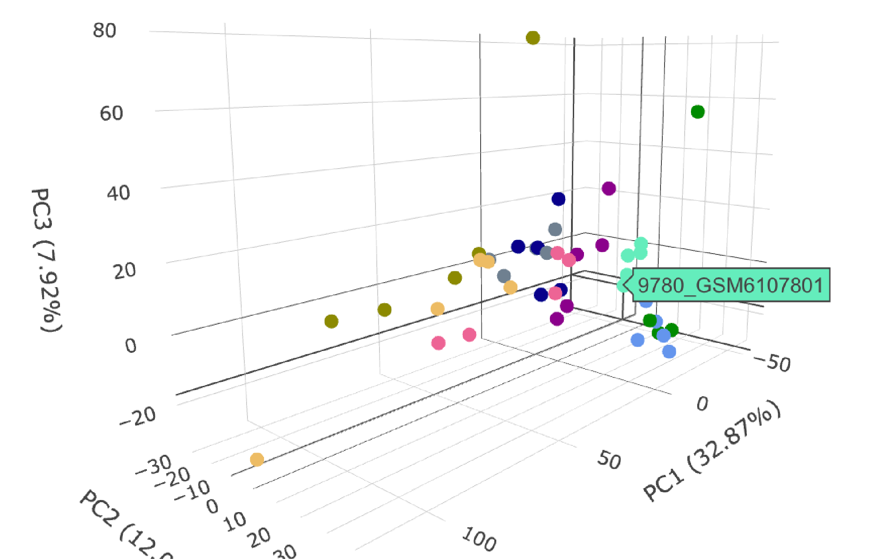

Resources
Find publications, stem cell generator facilities, and related platforms supporting Australian stem cell research.
Registry Publications
How FAIR is metadata for human pluripotent stem cells?
view publicationAustralian researchers' perceptions and experiences with stem cell registration.
view publicationExploring Patient Organization Involvement in Stem Cell Research: Insights from the Lifeworld.
view publicationStemformatics Publications

The Registry forms part of a larger digital ecosystem developed to support Australian stem cell researchers.
Stemformatics is a data visualization and collaboration platform that allows researchers to quickly view gene expression profiles in human pluripotent stem cells, and stem-cell derived tissues.
STEMFORMATICS WEBSITE ↗Stemformatics data portal enables transcriptional benchmarking of lab-derived myeloid cells.
view publicationStemformatics: visualize and download curated stem cell data.
view publicationStem Cell Generator Facilities
Stemcore
STEMCORE is a facility at the University of Queensland that provides a wide range of services related to pluripotent stem cells, including generation, editing, characterisation and banking.
STEMCORE WEBSITE ↗Victor Chang Cardiac Research Institute
Victor Chang Cardiac Research Institute Innovation Centre is based in NSW, and offers a complete pipeline from the generation of induced pluripotent stem cells (iPSCs), differentiation to 2D and 3D formats, as well as CRISPR-Cas9 based gene editing.
VICTOR CHANG WEBSITE ↗MCRI iPSC Derivation and Gene Editing Facility
MCRI iPSC derivation and gene editing facility is based at the Royal children’s hospital in Victoria, and offers a streamlined one-step gene-editing/reprogramming protocol that utilises episomal reprogramming vectors and the Cas9/CRISPR gene-editing system to facilitate the rapid and efficient generation of clonally derived gene-edited iPSC lines, among other gene editing services.
MCRI FACILITY WEBSITE ↗Stem Cell Disease Modelling Laboratory
University of Melbourne stem cell and disease modelling facility, Victoria, focuses on the production of large-scale iPSC cohorts. Our service also includes training of researchers in these procedures.
UNIVERSITY OF MELBOURNE WEBSITE ↗Human Pluripotent Stem Cell Registry
Human Pluripotent Stem Cell Registry
The Australian pluripotent stem cell registry thanks hPSCreg.org for advice in setting up our local registry, and for providing naming tools and conventions that we follow.
HPSCREG WEBSITE ↗